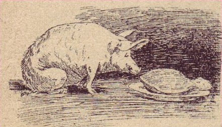

Gosky Patties

Description:
The nonsensical Gosky Patties is
a classic dish that is positively scrumdiddlyumptious
if successful and downright traumatizing if not. In the
end, however, it's the thought that counts.
The recipe is from a simpler time, one before PETA or a general
sense of moral decency. It is not for the faint of heart but rather
for the true gourmands among us.
Remember though, it's all about the journey... not the destination.
Ingredients:
- 1 pig (3 to 4 years of age)
- 5 pounds of currants
- 5 pounds of sugar
- 2 pecks of peas
- 18 roast chestnuts
- 6 bushels of turnips
- 4 quinces of foolscrap paper
- 1 packet of black pins
- cream (some)
- slices of Cheshire cheese (some)
- a candle
It should be noted that one may need double (or even thriple!)
the amounts noted of all ingredeients. Avail yourself accordingly.
Instructions:
- Take the pig and tie him or her by the off-hind leg to a post
- Place the currants, sugar, pecks of peas, roast chestnuts, candle,
and bushels of turnips within his or her reach. If eaten, constantly
provide him with more.
- Procure the cream, slices of Cheshire cheese, quinces of foolscrap
paper, and packet of black pins. Work the whole into a paste and spread
it out to a dry on a sheet of clean brown waterproof linen.
- When the paste is perfectly dry, but not before, proceed to beat the
pig violently with the handle of a large broom. If he or she
squeals, beat him or her again.
- Visit the paste and beat the pig alternately for some days and ascertain
that if at the end of that period the whole is about to turn into
Gosky Patties.
- If it does not then, it never will; and in that case the pig may be let
loose, and the whole process may be considered as finished.